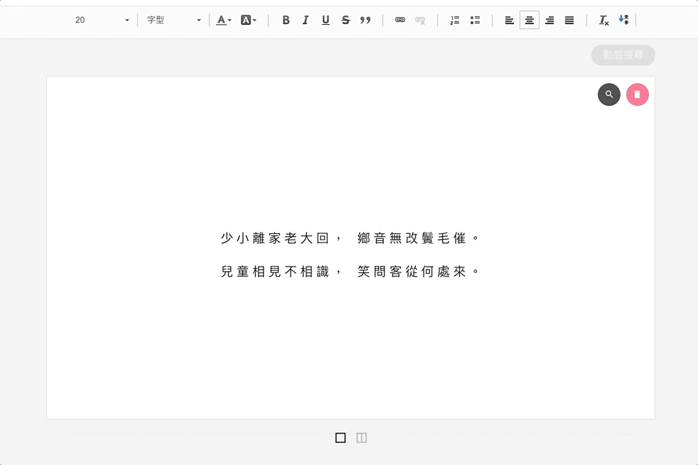

[學習筆記]CKEditor plugin 開發
話說好一陣子沒空理部落格了，尤其是這一陣子再拚論文進度，公司也少去了一些時間。這次要記錄遇到的問題，主要是針對CKEditor進行plugin的開發，雖說是開發，其實大部分的功能都希望不是由CKEditor這邊處理，反而是廣播一個事件，讓主要的程式碼angular部分的$scope內進行下一步動作，因此這邊的需求只是啟動一個請求而已。
開發
取名為vertical，希望功能是讓$scope內文字顯示改成橫式/直式，因此先將載入的ckeditor裡面plugins加入vertical資料夾，在裡面放入plugin.js和images資料夾，images裡面放一個icon.png
ckeditor/
└plugins/
└-vertical/
├-plugin.js
└-images/
└-icon.png
//mike
//plugin.js
(function() {
CKEDITOR.plugins.add('vertical', {
init: function(editor) {
//基本樣式設定
editor.ui.addButton('vertical', {
command: 'vertical',
icon: this.path + 'images/icon.png',
title:"橫式/直式"
});
//賦予按鈕功能
editor.addCommand('vertical', {
exec: function(editor) {
//用javascript原生方式廣播事件
var event = new Event('SETCELLVERTICAL');
document.dispatchEvent(event);
event.preventDefault();
}
});
}
});
})();
完成基本設定後再將ckeditor的設定內(預設可能在ckeditor的config.js內)加入plugins的設定。
//config.js
//在功能列加入'vertical'，並於extraPlugins引入此第三方開發外掛
toolbar_full: [{ name: 'styles', items: [......, 'vertical'] },
],
....
extraPlugins: 'blbalbalba,vertical',
大概這樣設定後，編輯器的事件就完成了。
結果
CKEditor plugin 直橫切換
